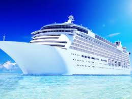

|

Mediterráneo Oriental
valoración: ★★★★☆
Itinerario: Venecia – Dubrovnik – Corfú – Santorini – Atenas – Estambul. Descubre la magia del Mediterráneo Oriental navegando entre ciudades llenas de historia, cultura y paisajes de ensueño. Disfruta de la arquitectura veneciana, las murallas de Dubrovnik, las playas de Corfú y los atardeceres de Santorini. Termina tu viaje en la vibrante Estambul, donde Europa y Asia se encuentran. |
|
Mediterráneo Occidental
valoración: ★★★☆☆
Itinerario: Barcelona – Marsella – Génova – Roma – Nápoles – Palma de Mallorca. Vive el Mediterráneo Occidental con escalas en ciudades icónicas. Pasea por las Ramblas de Barcelona, saborea la cocina francesa en Marsella, explora la historia de Génova y Roma, y relájate en las playas de Palma. Un crucero lleno de arte, cultura y paisajes inolvidables. |
|
Mar Egeo
valoración: ★★★★★
Itinerario: Atenas – Mykonos – Kusadasi – Patmos – Rodas – Santorini. Navega por el Mar Egeo y descubre la belleza de las islas griegas y la costa turca. Disfruta de la vida nocturna de Mykonos, la historia de Atenas, los templos de Kusadasi y los paisajes volcánicos de Santorini. Un viaje lleno de mitología, sol y mar. |
|
Mar Adriático
valoración: ★★☆☆☆
Itinerario: Venecia – Split – Kotor – Bari – Zadar – Dubrovnik. Explora la costa dálmata y sus joyas medievales. Desde los canales de Venecia hasta las murallas de Dubrovnik, pasando por la bahía de Kotor y las playas de Split. Un crucero ideal para los amantes de la historia, la arquitectura y el mar Adriático. |
|
Islas Canarias
valoración: ★★★★☆
Itinerario: Tenerife – Gran Canaria – Lanzarote – Fuerteventura – La Palma. Descubre el eterno clima primaveral de las Islas Canarias, sus paisajes volcánicos, playas de arena dorada y pueblos pintorescos. Cada isla ofrece una experiencia única, desde el Teide en Tenerife hasta los paisajes lunares de Lanzarote. |
|
Fiordos Noruegos
valoración: ★★★★★
Itinerario: Bergen – Geiranger – Flam – Stavanger – Ålesund. Embárcate en un viaje por los fiordos noruegos, rodeado de montañas, cascadas y naturaleza virgen. Disfruta de la tranquilidad de Geiranger, los trenes panorámicos de Flam y la arquitectura de Bergen. Un crucero para los amantes de la naturaleza y la fotografía. |
|
Mar Rojo
valoración: ★★★☆☆
Itinerario: Sharm el-Sheij – Hurghada – Aqaba – Safaga – Eilat. Sumérgete en el Mar Rojo y sus aguas cristalinas, ideales para el buceo y el snorkel. Descubre arrecifes de coral, playas paradisíacas y ciudades llenas de vida. Un crucero perfecto para los amantes del mar y la aventura. |
|
Océano Índico
valoración: ★★☆☆☆
Itinerario: Mauricio – Seychelles – Maldivas – Madagascar – Reunión. Navega por el Océano Índico y visita algunas de las islas más exóticas del mundo. Disfruta de playas de arena blanca, aguas turquesas y una biodiversidad única. Un crucero para quienes buscan relax, lujo y paisajes inolvidables. |